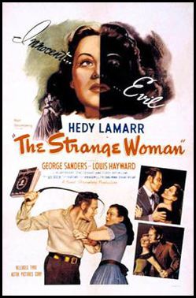
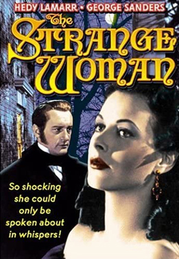
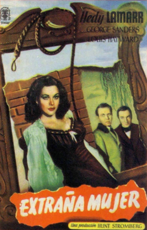

The Strange Woman
Hedy Lamarr
Louis Hayward
Dennis Hoey
Hillary Brooke
June Storey
Olive Blakeney
Jo Ann Marlowe (uncredited)
Christopher Severn (uncredited)
Ian Keith (uncredited)
SYNOPSIS
In 1820s New England, beautiful but poor and manipulative Jenny Hager marries rich old man Isaiah Poster but also seduces his son and his company foreman.
Beautiful Jenny Hager finds she can always get what she wants from the men in the port of Bangor, Maine. Freed by his death from her drunkard father she soon manoeuvres herself into a position to marry a middle-aged monied local businessman. Though she often uses his money to do good, she continues to consider all other men fair game.
The production dates were from mid-December 1945 to mid-March 1946 at the Samuel Goldwyn Studios. Hedy Lamarr and Jack Chertok formed a partnership to produce this film. Production on the film was shut down between 13 December 1945 and 3 January 1946 due to Lamarr contracting influenza. The film's sets were designed by the art director Nicolai Remisoff.
Director Edgar G. Ulmer became famous through movies like: The Black Cat, The Strange Woman, The Amazing Transparent Man and The Man from Planet X.
Douglas Sirk directed, uncredited, the opening sequence with Jenny Hager as a child: executive producer Hunt Stromberg declared his dissatisfaction with the original footage of Ulmer's own daughter Arianné who played the young Jenny - she was purportedly not nasty enough - and so he and Hedy Lamarr enlisted Sirk to reshoot the scenes using Jo Ann Marlowe who had appeared in Sirk's own A Scandal in Paris earlier that year, and who had also featured as Joan Crawford's daughter Kay in Michael Curtiz' Mildred Pierce.


